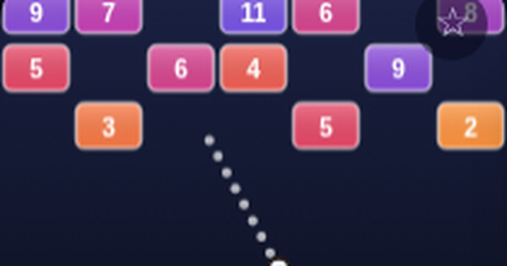

한방 벽돌깨기
Brick Blast
조준 · 한 손무료설치 없음폰 · PC
▶ 지금 바로 하기로그인 없이 브라우저에서 바로 시작돼요
어떤 게임인가요?
끌어서 조준하고 놓으면 공이 줄지어 쏟아집니다. 폭탄 벽돌과 레이저로 한 번에 쓸어버리세요.
목표 · 벽돌이 바닥 줄에 닿기 전에 최대한 높은 레벨까지 버티세요.
게임 방법
- 판은 6칸 × 9줄, 밝은 판에 납작한 벽돌이에요. 벽돌 색이 진한 빨강일수록 튼튼해요 (시작 화면에서 어두운 판으로도 바꿀 수 있어요).
- 매 턴 한 번 조준해서 쏩니다. 가진 공이 전부 줄지어 날아가요.
- 공은 맞은 면의 각도대로 튕깁니다. 모서리에 맞으면 대각선으로 튀어요. Super Hard에서는 빗면이 있는 삼각 벽돌도 나와요.
- 벽돌의 숫자는 남은 체력입니다. 공이 한 번 닿을 때마다 1씩 줄어요.
- 턴이 끝나면 벽돌이 한 칸씩 내려오고, 맨 위에 새 줄이 생깁니다.
- 처음 떨어진 공의 자리가 다음 턴의 발사 위치가 됩니다.
- 10레벨마다 능력 3개 중 하나를 고릅니다 (공 +3 · 쾌속 · 폭탄 · 강타).
등장하는 것들
- 초록 고리 · 공 +1 · 먹으면 초록 공이 바닥으로 떨어져 다음 턴부터 합류
- 파란 고리 · 닿을 때마다 가로 또는 세로 한 줄 전체에 피해
- 폭탄 벽돌 · 깨지면 주변 3×3 벽돌에 큰 피해
- 주황 고리 · 지나간 공이 아무 방향으로 튀어요
- 이어하기 · 바닥에 닿으면 한 판에 1번, 아래 3줄을 지우고 계속
- 삼각 벽돌 (Super Hard) · 빗면에 맞으면 대각선으로 튕겨요
- 틈새 명중 · 두 벽돌 사이를 정확히 맞히면 둘 다 깎여요
- 주황 점선 · 직전에 쏜 방향 (조준 참고용)
공략 팁
- 벽에 튕겨서 벽돌 위쪽 빈 공간으로 공을 넣으면 한 번에 여러 번 맞아요.
- 나란히 붙은 벽돌 두 개의 틈을 노리면 한 번에 둘 다 깎을 수 있어요.
- 삼각 벽돌 빗면을 이용하면 옆쪽 구석까지 공을 보낼 수 있어요.
- 폭탄 벽돌 주변에 단단한 벽돌이 모였을 때 폭탄을 노리세요.
- 공이 오래 날면 자동으로 빨라집니다 (7초 후 2배, 14초 후 3배).
 별빛 편대
별빛 편대 오목
오목 왕머리 축구
왕머리 축구 탑 쌓기
탑 쌓기 스도쿠
스도쿠 틀린 그림 찾기
틀린 그림 찾기